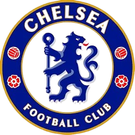
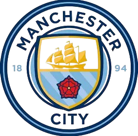

CHELSEA
Chelsea Football Club, founded in 1905, is based in Fulham, West London, and plays its home matches at Stamford Bridge. Originally built in 1877, Stamford Bridge became Chelsea’s home from the club’s inception and currently holds around 40,000 spectators. It is one of the oldest and most iconic stadiums in English football, with redevelopment plans under discussion for expansion or rebuilding.
Chelsea had early periods of success, winning their first league title in 1955, but much of their golden era came after Roman Abramovich bought the club in 2003. With heavy investment in players and infrastructure, Chelsea quickly rose to the top of English and European football. Under various managers, including José Mourinho, they won multiple Premier League titles, FA Cups, and notably the UEFA Champions League in 2012 and 2021.
The club has built a reputation for strong defensive teams, world-class players, and a competitive edge in knockout competitions. In 2022, Chelsea was sold to a consortium led by Todd Boehly, ushering in a new era focused on youth development and long-term strategy, though results have been mixed. Chelsea remains a major force in the Premier League, with a global fanbase and a rich, evolving legacy. Their nickname is The Blues
MANCHESTER CITY
Manchester City Football Club, founded in 1880 as St. Mark’s (West Gorton), is one of England’s most successful and globally recognized football teams. Originally playing at Maine Road from 1923 to 2003, the club moved to the Etihad Stadium (City of Manchester Stadium) in 2003. The stadium, initially built for the 2002 Commonwealth Games, was converted for football and has since become a centerpiece of the Etihad Campus—a world-class sports and training complex in East Manchester.
City experienced periods of success throughout the 20th century, including league titles in 1937 and 1968 and a European Cup Winners’ Cup in 1970. However, their modern transformation began with the 2008 takeover by the Abu Dhabi United Group. With major financial investment and strategic leadership, including appointing Pep Guardiola in 2016, the club has dominated English football—winning multiple Premier League titles, domestic cups, and completing a historic treble (Premier League, FA Cup, Champions League) in 2023.
The Etihad Stadium now holds over 55,000 fans, with plans to expand beyond 60,000, adding a hotel, museum, and fan park. Manchester City’s rise reflects not only sporting excellence but also a model of modern football business and infrastructure development.